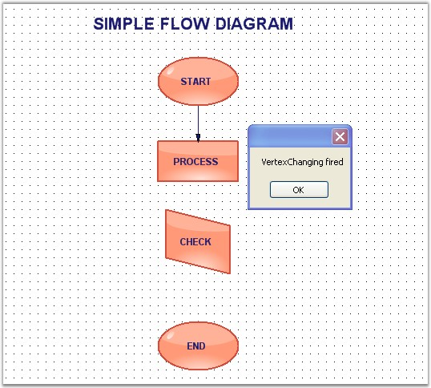
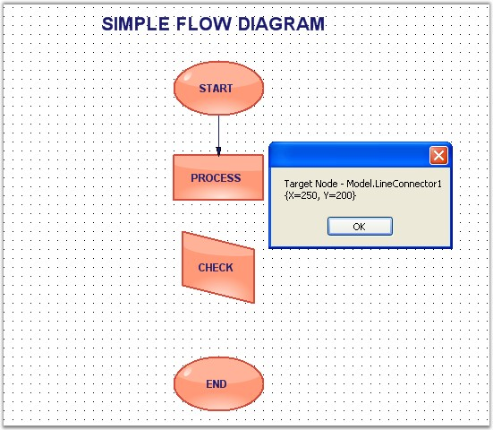

Vertex Events are as follows,
|
DocumentEventSink |
Description |
|
VertexChanged |
Gets fired after the vertex of the node has been changed. |
|
VertexChanging |
Gets fired when the vertex of the node is changed. |
Data can be retrieved or set using the following members.
|
Vertex EventArgs Member |
Description |
|
Cancel |
Cancels the Vertex Changed event from being fired. |
|
ChangeType |
It returns the following possible value:
· Set - whether the vertex is set for the node. |
|
NodeAffected |
Returns the node's name by which the node was affected. |
|
VertexIndex |
Returns the index of the current vertex. |
|
VertexLocation |
Returns the position of the vertex. |
Programmatically the events are written as follows,
|
[C#]
public void Form1_Load(object sender, EventArgs e) { ((DocumentEventSink)model1.EventSink).VertexChanged += new VertexChangedEventHandler(Form1_VertexChanged); ((DocumentEventSink)model1.EventSink).VertexChanging += new VertexChangingEventHandler(Form1_VertexChanging); LineConnector line = new LineConnector(circle.PinPoint, polygon.PinPoint); polygon.CentralPort.TryConnect(line.HeadEndPoint); circle.CentralPort.TryConnect(line.TailEndPoint); model1.AppendChild(line);
}
private void Form1_VertexChanging(VertexChangingEventArgs vertexChange) {
MessageBox.Show("VertexChanging fired"); model1.LineStyle.LineWidth = 2;
}
private void Form1_VertexChanged(VertexChangedEventArgs vertexChange) {
MessageBox.Show("Target Node - " + vertexChange.NodeAffected.FullName + "\n" + vertexChange.VertexLocation.ToString());
} |
|
[VB]
Public Sub Form1_Load(ByVal sender As Object, ByVal e As EventArgs) AddHandler DirectCast(model1.EventSink, DocumentEventSink).VertexChanged, AddressOf Form1_VertexChanged AddHandler DirectCast(model1.EventSink, DocumentEventSink).VertexChanging, AddressOf Form1_VertexChanging Dim line As New LineConnector(circle.PinPoint, polygon.PinPoint) polygon.CentralPort.TryConnect(line.HeadEndPoint) circle.CentralPort.TryConnect(line.TailEndPoint)
model1.AppendChild(line) End Sub
Private Sub Form1_VertexChanging(ByVal vertexChange As VertexChangingEventArgs)
MessageBox.Show("VertexChanging fired")
model1.LineStyle.LineWidth = 2 End Sub
Private Sub Form1_VertexChanged(ByVal vertexChange As VertexChangedEventArgs)
MessageBox.Show(("Target Node - " & vertexChange.NodeAffected.FullName & vbLf) + vertexChange.VertexLocation.ToString()) End Sub |
Sample diagrams are as follows,

Figure 103: Diagram with Vertex Changing Event

Figure 104: Diagram with Vertex Changed Event